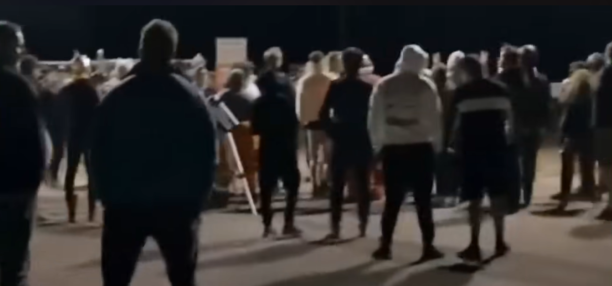
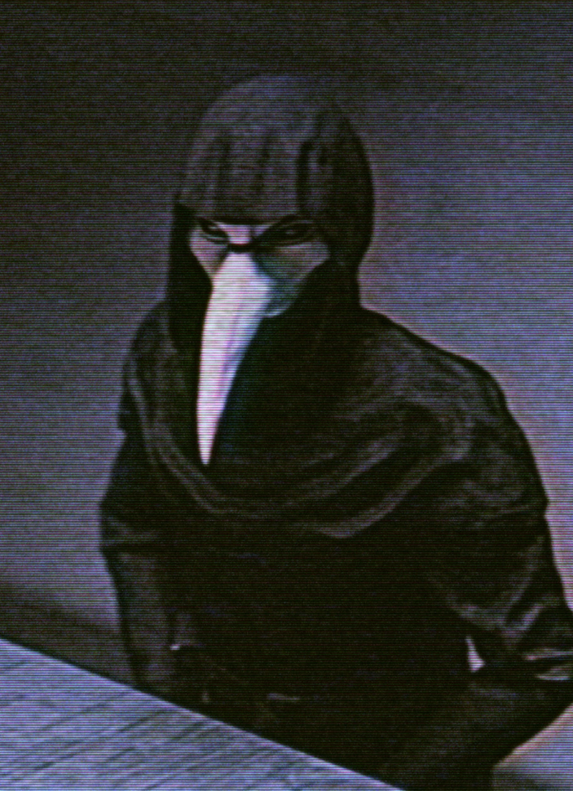
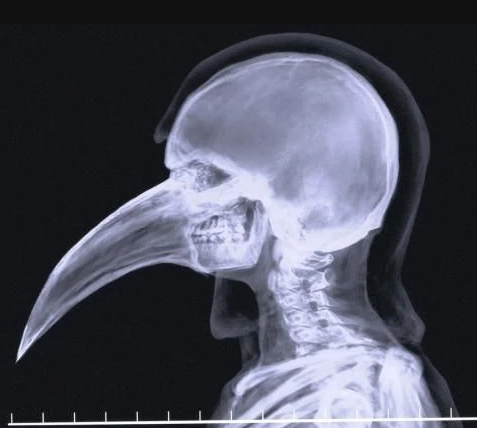

ERRO CRÍTICO
Conexão com servidores principais: PERDIDA
Protocolos de contenção: COMPROMETIDOS
Unidade Canto A: ESTÁVEL
Se você está vendo isso, então o sistema automático falhou, deixamos de usar o canal GERAL pois desde o começo das explorações lunares, muitos "curiosos" se interessavam em saber mais sobre. Por isso, optamos por um sistem mais privativo.
Esse canal é restrito apenas para membros de Nível-4 da organização, qualquer vazamento resultará em exulceração imediata e possíveis consequências piores futuramente.
Ultimamente, Vance tem trabalhado arduamente para resolver as questões das famílias despejadas a um tempo pela papelada de Nashell. Aparentemente, muitos deles estão tentando ações legais contra a corporação, nós não iremos tolerar interferências indesejadas.
Esperamos resolver pacificamente
Após a saída provisória da Dra. Charllote, outros cientistas colegas dela decidiram deixar a companhia também. Por isso, Vance sugeriu o recrutamento de cientistas alternativos conhecidos dele do Norte da Rússia, ele disse que são homens que
seguem ordens bem. Nashell pareceu concordar e pediu os nomes.
O espécime-002 está sendo mantido sob observação, mas aparenta ser estável.
Dr. Elias relatou na manhã do dia 01 sobre mudanças atmosféricas na lua, Nashell o ignorou.
A volta de Dra. Charllote é imprescindível para a conclusão de certos experimentos com o espécime-002, foi a conclusão tirada pela equipe de Vance, já que ela tem conhecimentos que fogem do escolpo dos mesmos e serão necessários.
O irmão de Nashell constantamente reclama de como as coisas estão sendo feitas. Acreditamos que ele não saiba, mas sabemos que oque ele tentou fazer com o espécime. Pedimos a Maycon e sua equipe que permitissem as atividades dele pela organização apesar disso.
Dr. Elias faltou pela primeira vez.
Dr. Elias não voltou para o trabalho até agora, Maycon sugeriu a Nashell que enviasse alguém à sua casa para ver como ele está. Nashell disse não ser necessário, ninguém alí é insubstituível tirando ela.
Maycon pareceu frustrado, mas aceitou. O irmão de Nashell também não vem já fazem dias, mas ninguém fala dele.
Ontem fomos invadidos.
Um grupo insurgente de membros das famílias que tinham moradias perto da instituição e parentes deles invadiram a corporação ao cair da noite. O grupo de Maycon foi autorizado a utilizar armamento letal... Mas Maycon foi fraco.
Inicialmente, entraram alguns pela área de mecânica no Canto C, e depois outros que se organizaram pela frente entraram também.

Após a invasão, muitos cientistas decidiram se retirar momentaneamente da instituição para a própria segurança. Maycon foi advertido severamente e o irmão de Nashell desapareceu, tudo parece estar ruindo.
Contudo, tudo isso não é nada em comparação com a nova descoberta feita pelos pesquisadores recentemente: A lua está se afastando do planeta. Eles atribuem isso à mudança nas propriedades magnéticas dela pela retirada de quantidades absurdas do mineral.
Estimamos que daqui a 5 dias, ela já estará tão longe que não poderemos observa-la da terra mais... Nashell soube disso hoje pela manhã e reafirmou que continuará com as explorações, e que inclusive tem homens da organização no satélite natural hoje.
Nossas expectativas foram completamente quebradas. A lua parecia ter uma aceleração crescente de forma inexplicavelmente rápida, se comportando quase como um objeto microscópico. Em questão de cerca de 4 dias, ela saiu completamente do alcance dos telescópios tradicionais.
Muitas pessoas estão relatando isso em fóruns. Vance fez algo que atrasou a mídia de propagar essa informação, contudo isso é inevitável.
Nashell saiu de seu escritório ontem, ele esteve lá desde dia 13. Ele disse que refletiu sobre oque aconteceu, e que agora nós precisamos consertar a situação: sua prioridade agora é cuidar do mundo e dela ao mesmo tempo, diz ele.
As pessoas nomearam o evento como Noite Valburga, a noite agora não acaba mais. Nashell que dizia ajudar não durou nem um mês com essa intenção. Com a noite, ele sabia que viriam monstros, e alguns pesquisadores falam sobre ele ter feito isso de propósito, apesar dele negar.
A infecção do espécime-002 se espalhou pelo mundo, talvez pelo contato daquelas pessoas com o minério durante a invasão. Com isso, pesquisadores fizeram até então a descoberta mais importante sobre essa doença: Ela é enfraquecida pelo mineral, eles supõem que o espécime-002 se manteve consciente pela
proximidade à Ala A e ao armazém apenas, oque explicaria sua súbita piora quando afastada do prédio. Além disso, os novos infectados da Hi'fo produzem quantidades pequenas de Selenita-G em seu fígado, e apesar de não sabermos como isso ocorre ainda, Nashell está capturando os infectados para extrair o minério
sob o pretexto de cura-los...
O pessoal de Maycon agora trabalha tanto na proteção da companhia como também na assistência aos atingidos pela Noite Valburga (todo o mundo), então seu setor é disparadamente o maior da organização. Por sermos uma instituição publicamente confiável, foi fácil para Vance
convencer governos inteiros a nos indicar como fonte de proteção e segurança.
Nashell parece cada vez mais doente
O grupo de Maycon tem feito trabalhos excepcionais. Estamos conseguindo ajudar sobreviventes enquanto ainda capturamos infectados para entendermos a infecção que denominamos de Hi'fo, talvez essa seja redenção dele por permitir a invasão...
Com o tempo, as equipes de pesquisadores diminuem. A doutora Charllote recentemente decidiu sair da equipe permanentemente, alguns dizem que ela conversou com o irmão de Nashell antes disso, mas são apenas boatos.
Com as expedições da equipe de Maycon, pudemos perceber que existem níveis de infecção e classificar melhor cada um delas para os membros das equipes. Contudo, existe um tipo em específico que Nashell preferiu que mantivessemos em particular: a classificação que ele chama de "Apolion".
Durante a expedição MC-246, a equipe de Maycon se encontrou com um indivíduo que apresentava sintomas incomuns para a Hi'fo: ele era consciente e conversava normalmente apesar de visualmente infectado. Alguns soldados decidiram conversar com ele, e não houveram baixas. Aquele infectado usava uma máscara
de doutor da praga, e dizia que "ele" estava se alimentando, e que em breve a "praga" acabaria. O infectado, após algum tempo de conversa, alertou que ele estava vindo, os soldados foram imediatamente ordenados a deixarem o local, mas ao que tudo indica, o doutor da praga continua lá. Para checar os relatórios extra-oficiais, deve-se pedir permissão a Maycon pelo email oficial (recado do próprio)
O infectado da praga seguiu os soldados devolta para as instalações. Não sabemos como, mas ele conseguiu entrar no prédio da corporação, mas não atacou nem causou danos alguns. Aparentemente, ele só tem interesse em "ver tudo de primeira mão" por suas palavras, fizemos algumas
entrevistas sobre oque ele quer dizer com isso, mas ele não responde objetivamente e só continua mencionando a "praga" que será erradicada em breve.


Maycon relatou uma diminuição anormal na quantidade de eventos envolvendo infectados recentemente, assim como uma menor quantidade de pedidos por suprimentos ou ajuda em geral. Ele atribui isso a um "caçador" que ele diz estar juntando material orgânico.
Recentemente, foi reportado por equipes táticas a presença de grupos hostis de humanos fora dos limites da corporação. Esse grupo possivelmente seria liderado por figuras conhecidas. Tudo está sob o encargo de Maycon, e Nashell falou pessoalmente ao mesmo para que use força se necessário, e que vidas sempre foram um preço a se pagar pela paz em toda a humanidade, Maycon hesitou por um instante mas concordou depois.
O grupo hostil cresce cada vez mais e Nashell parece cada vez mais irritado com isso, ele chamou Maycon para sua sala recentemente e os dois passaram mais de 3 horas conversando até que Maycon saiu de lá com a cara de quem viu um fantasma. O doutor praga recentemente parou de apresentar atividades, se encontra parado olhando para o próprio reflexo em um espelho, sua última fala foi sobre algo estar mais perto do que ele achava. A companhia já publicou em todos os lugares a seu alcance sobre a organização criminosa que está os atacando, chamando-os de terroristas.
Um dos criminosos do grupo terrorista foi capturado, e por ordem de Nashell, foi feita uma transmissão de vídeo na qual ele foi degolado ainda vivo e depois teve seu corpo jogado para ser devorado por um infectado de posse da companhia. Nashell depois do ocorrido falou na própria transmissão que eventualmente esse seria o destino de todos do grupo terrorista, e que a única forma de saírem com vida seria entregando seus companheiros. A transmissão foi encerrada e nenhum agente falou sobre oque ocorreu, aqueles que deceparam o homem ficaram sentados por mais de 9 horas em suas salas. O doutor praga se moveu hoje após a morte do criminoso, ele assistiu a cada segundo daquela transmissão, ele foi o único dentro da companhia que o fez além de Nashell, que reviu mais de 3 vezes aquela gravação. O doutor idolatrou a crueldade vista, e se disse satisfeito com aquilo, após isso, ele voltou a encarar aquele espelho.
Recentemente, Nashell fez um pronunciamento direto sobre os grupos terroristas:
"Hoje, a corporação é a responsável pela vida de todos. Eu conheço aquele que lidera a insurgência e posso dizer que ele não é capaz de liderar o mundo como eu,
ele não trará a justiça como eu, não terá as prioridades certas. Eu sei da realidade que vivemos, e vivo ela assim como todos vocês que me ouvem, eu busco a cura
para que todos possam viver normalmente denovo. Todos nossos esforços são para curar pessoas, uma em específico, por que assim como todos vocês, eu também tenho
uma pessoa amada que quero proteger com minha vida. Então por favor, não ouçam o grupo terrorista emergente, eles prometem um mundo ideal que sabemos que não é
alcançavel enquanto a Hi'fo existir. Minhas sinceras desculpas a todos que solicitaram a ajuda da companhia e não receberam ainda, estamos tendo que lidar diariamente
com grupos armados que desejam destruir os alicerces da companhia. Espero que todos aí fora estejam se saindo bem."
RmxvcmVuc2U=